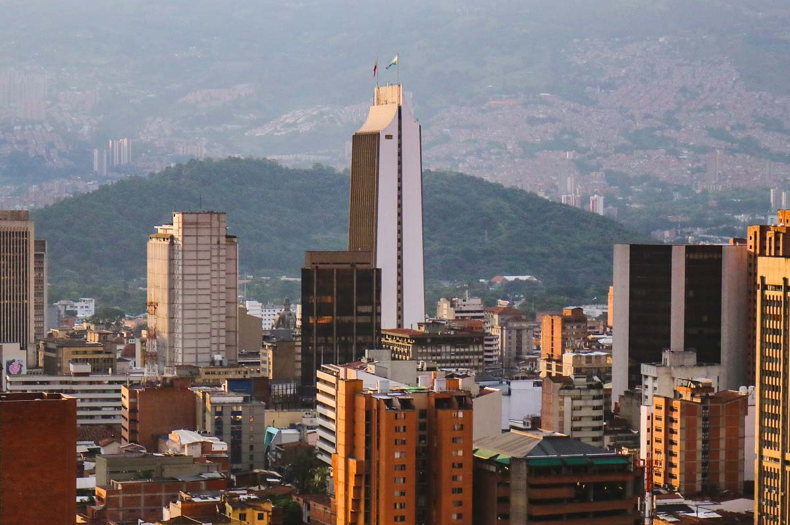
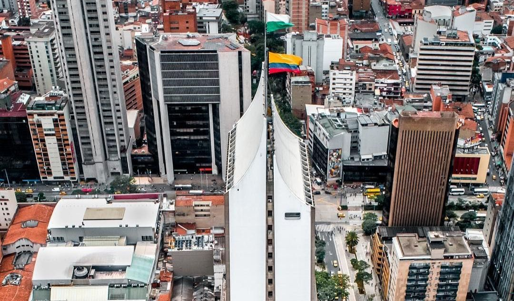
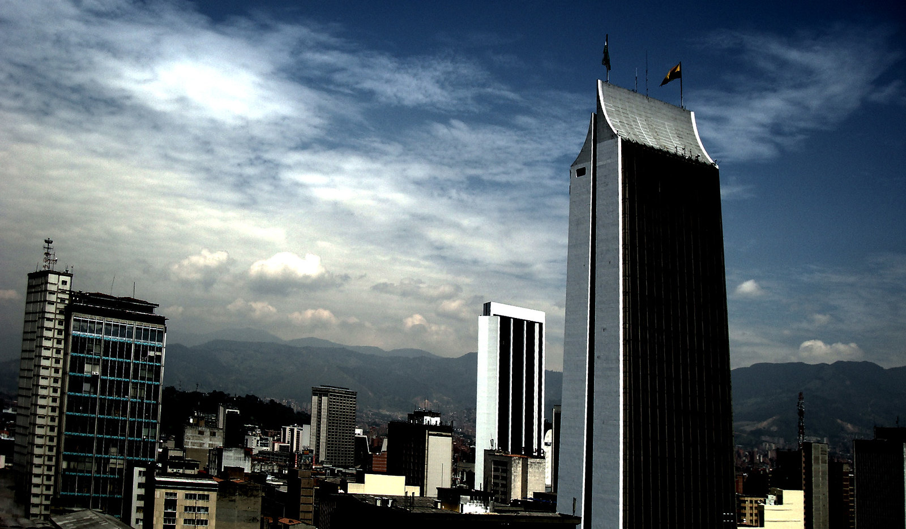

Con tan solo cuatro telares, doce trabajadores y $1.000 pesos de oro inglés de capital, el 22 de octubre de 1907 se constituyó en Medellín la primera planta industrial moderna de textiles en Colombia: la Compañía Colombiana de Tejidos (Coltejer). Esta empresa, fundada por Alejandro Echavarría e Hijo y R. Echavarría & Cía., sentó las bases para el desarrollo del capitalismo industrial en el país, según el Banco de la República.
A lo largo de su historia, Coltejer vivió un notable auge, especialmente durante las décadas de 1970 y 1980, cuando se consolidó como un referente del sector textil colombiano. Durante este período de esplendor, se construyó el icónico Edificio Coltejer, terminado en 1972, que no solo se convirtió en el edificio más alto de Medellín y uno de los más altos del país, sino también en el símbolo arquitectónico y visual de la empresa. Este edificio, que por más de un siglo ha representado la imagen de marca de la compañía, sigue siendo un emblema de la modernidad y el progreso industrial antioqueño.

Una identidad que resistió el paso del tiempo
En cuanto a su identidad visual, el logo de Coltejer se ha caracterizado por mantener una tipografía constante a lo largo de los años, aunque ha presentado variaciones en el color y algunos detalles gráficos. Este diseño refleja la estabilidad y tradición que la marca buscó proyectar durante más de un siglo, convirtiéndose en un símbolo de continuidad en medio de los cambios económicos y sociales.

El inicio del declive y los retos de la globalización
Sin embargo, pese a su grandeza histórica, Coltejer enfrentó con el tiempo una profunda crisis. La competencia de importaciones baratas, especialmente provenientes de China, junto con la disminución de la producción nacional de algodón, afectaron gravemente su sostenibilidad. Como consecuencia, la empresa inició un proceso de declive que culminó en 2021 con su liquidación y, posteriormente, con la solicitud al Ministerio de Trabajo para realizar un despido colectivo de sus empleados.
El legado de una empresa que marcó una época
Tal como señaló el economista y especialista en el sector industrial Javier Mejía, “Coltejer fue el gran símbolo de la industrialización, no solo de la industria antioqueña, sino también de la colombiana. No fue la primera textilera grande del país, pero fue la que creció más rápido, porque logró satisfacer un mercado que estaba cautivo: el de las telas.”
En definitiva, Coltejer representa una parte fundamental de la historia industrial de Colombia. Aunque su cierre marca el fin de una era, su legado perdura como símbolo del ingenio, la innovación y el espíritu emprendedor que impulsaron el desarrollo del país.
